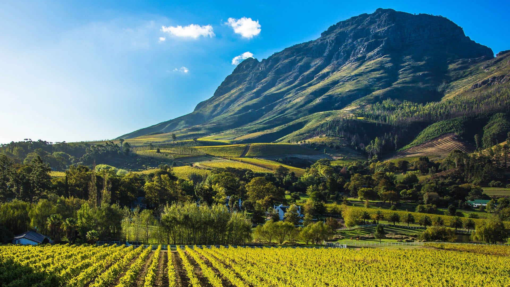

Cape Winelands & Nature Reserves
The Cape Winelands are famous for their rolling vineyards, historic wine estates, and scenic beauty. Visitors can explore towns like Stellenbosch, Franschhoek, and Paarl while enjoying wine tastings and gourmet cuisine.
Nearby nature reserves offer hiking trails, waterfalls, and unique fynbos vegetation. Birdwatching, scenic drives, and outdoor activities allow travelers to fully experience the region’s natural diversity and cultural charm.